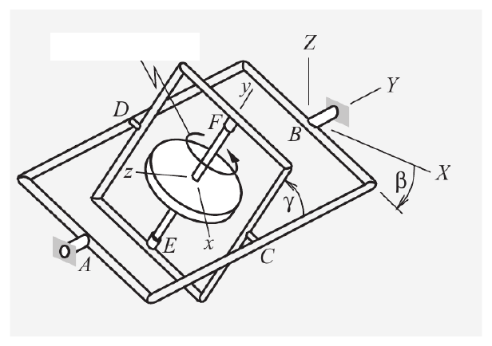
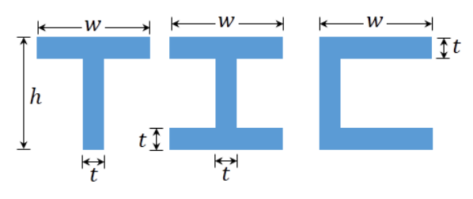
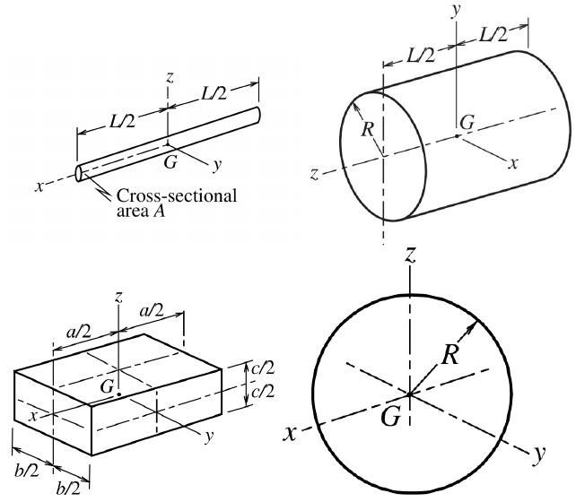
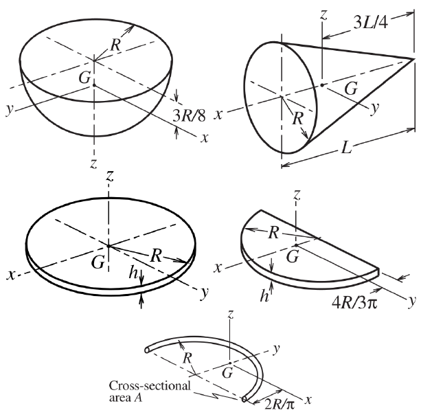

Topic 6: Kinematics of Rigid Bodies and Inertia Properties - Problem Sets
Rigid body kinematics, Euler angles and the instantaneous axis of rotation
A rigid body moves with respect to a reference frame $Oxyz$. At a given instant, the velocity of the point $A(a, 0, 0)$ is $v_0\mathbf{j}$, the velocity of a point $B(0, a, 0)$ of the rigid body is $v_0(\mathbf{j} + \mathbf{k})$ and the velocity of a third point of the rigid body, $C(0, 0, a)$, is $v_0(\mathbf{i} + \mathbf{j} + \mathbf{k})$. Where is the instantaneous axis of rotation? Does the body have a slip velocity at this instant? Compute also the angular velocity of the rigid body at this instant. Find the minimum velocity of all points of the rigid body.
Worked Solution [ Click to Expand ]
Reference Frames, Bases and Degrees of Freedom
- Physical system: one rigid body observed at a single instant. The velocities of three of its points, each on one coordinate axis at the same distance $a$ from the origin, are known.
- Fixed frame: $S_0$ is the frame $Oxyz$ of the statement, with origin $O$ and right-handed basis $\{\mathbf i, \mathbf j, \mathbf k\}$.
- Body frame: not needed; every vector is written in the fixed basis at the given instant.
- Degrees of freedom: six for a free rigid body. The nine velocity components of the statement contain three redundant data, which must satisfy the rigidity conditions.
| Point | Position | Velocity | SI units |
|---|---|---|---|
| $A$ | $(a, 0, 0)$ | $v_0\,(0, 1, 0)$ | m, m/s |
| $B$ | $(0, a, 0)$ | $v_0\,(0, 1, 1)$ | m, m/s |
| $C$ | $(0, 0, a)$ | $v_0\,(1, 1, 1)$ | m, m/s |
- Unknowns: the angular velocity of the body, its slip velocity (if any), the instantaneous axis, and the minimum speed among all body points.
Change of Basis, Position Vectors and Constraint Kinematics
No change of basis is needed. The figure shows the three points, their velocities and the triangle they form.
Units: positions in $[\mathrm L]$, velocity differences in $[\mathrm{L\,T^{-1}}]$
Meaning: the three points are the vertices of an equilateral triangle of side $a\sqrt2$; they are not collinear, so their velocities fix the field.
Units: $[\mathrm{L\,T^{-1}}][\mathrm L] = [\mathrm{L^2\,T^{-1}}]$
Meaning: the three sides of the triangle keep their length, so the data can belong to a rigid body.
Units: $[\mathrm{L\,T^{-1}}]/[\mathrm L] = [\mathrm{T^{-1}}]$
Meaning: the body turns about a direction parallel to the second axis, counterclockwise when seen from the positive end of that axis, at the rate $v_0/a$.
For any body point $P$:
Units: $[\mathrm{L\,T^{-1}}]$
Meaning: the body does have a slip velocity: it advances along the direction of its angular velocity while it turns, so the motion is a screw motion and there is an instantaneous axis of rotation and slip, not of pure rotation. No body point moves slower than $v_0$.
Units: $[\mathrm{T^{-1}}][\mathrm{L\,T^{-1}}]/[\mathrm{T^{-2}}] = [\mathrm L]$
Meaning: the velocity of $A$ is already parallel to the angular velocity, so $A$ has no perpendicular part and lies on the axis. The axis is the line through $A$ parallel to the second coordinate axis.
Center of Mass and Inertia Tensor
This section does not apply: the problem is purely kinematic.
Linear Momentum, Angular Momentum and Kinetic Energy
This section does not apply: no momentum or energy is asked for.
Free-Body Diagram and Equations of Motion
This section does not apply: the statement gives the motion at one instant and no forces.
Answers and Checks
| Asked | Answer |
|---|---|
| Instantaneous axis | The line through $A$ with the direction of $\mathbf j$ |
| Slip velocity | Yes: $v_0\,\mathbf j$, so the axis is one of rotation and slip (screw motion) |
| Angular velocity | $(v_0/a)\,\mathbf j$ |
| Minimum speed | $v_0$, reached at the points of the axis (for example $A$) |
Check against the official key: the key (Problems.pdf, p. 77) prints a minimum speed $v_0$, the angular velocity $(v_0/a)\,\mathbf j$ and the axis as the line with the direction of $\mathbf j$ that passes through $A$. The three coincide with the results above.
Units: $[\mathrm{T^{-1}}][\mathrm L] = [\mathrm{L\,T^{-1}}]$
Meaning: both are the velocities of the statement, so the angular velocity is the only one compatible with the data.
Limiting cases and consistency:
- Speeds against distances to the axis. $B$ and $C$ are at the distances $a$ and $a\sqrt2$ from the axis; their perpendicular speeds, $v_0$ and $v_0\sqrt2$, are the angular speed times those distances.
- Without the common second component. If the three given velocities had no component along $\mathbf j$, the differences between them, and therefore the angular velocity, would be the same, and the same axis would be one of pure rotation with $A$ at rest.
- Dimensions. The angular velocity is a speed divided by a length, in rad/s.
A rigid body (body reference frame $Px_By_Bz_B$) is moving with respect [sic] a reference frame $Oxyz$ in a way such that:
- the point $P$ of the solid is located along $Oy$
- the axis $Px_B$ passes through $A(a, 0, 0)$ (coordinates with respect to $Oxyz$)
- the angle $\theta$ between $Py_B$ and the plane $Oxy$ is equal to the angle between $Ox$ and $Px_B$
Determine the angular velocity of the body ($\boldsymbol{\omega}$) and the velocity of $P$ ($\mathbf{v}_0^P$) as a function of $\theta$ and $\dot{\theta}$.
Worked Solution [ Click to Expand ]
Reference Frames, Bases and Degrees of Freedom
- Physical system: one rigid body whose position and attitude are tied to a single angle $\theta$ by the three geometric conditions of the statement.
- Fixed frame: $S_0\{O; \mathcal B_0\}$ is the frame $Oxyz$ of the statement, with right-handed basis $\{\mathbf i, \mathbf j, \mathbf k\}$.
- Body frame: $S_B\{P; \mathcal B_B\}$ is the frame $Px_By_Bz_B$ of the statement, with origin at the body point $P$ and right-handed basis $\{\mathbf i_B, \mathbf j_B, \mathbf k_B\}$ along the axes $Px_B$, $Py_B$, $Pz_B$.
- Intermediate basis: $\mathcal B_1\{\mathbf i_1, \mathbf j_1, \mathbf k_1\}$, obtained from $\mathcal B_0$ by the first elementary rotation, about $\mathbf k$; the body basis is obtained from $\mathcal B_1$ by the second one, about $\mathbf i_1$.
- How each condition is read:
- The point $P$ is located along $Oy$. Its first and third coordinates are zero, so $P$ lies in the plane $Oxy$ at a distance from $O$ that changes with time.
- The axis $Px_B$ passes through $A(a, 0, 0)$. Both $P$ and $A$ lie in the plane $Oxy$, so the whole line $Px_B$ lies in that plane: $\mathbf i_B$ is horizontal. Its sense is read as pointing from $P$ towards $A$.
- The angle between $Py_B$ and the plane $Oxy$ equals the angle between $Ox$ and $Px_B$, and both are $\theta$. The first angle fixes how far $\mathbf j_B$ is lifted out of the plane $Oxy$; since $\mathbf i_B$ stays in that plane, the lift is a rotation about $\mathbf i_B$ itself. The second angle fixes the direction of the horizontal line $Px_B$.
- Senses chosen (reading of the statement, which gives only the size of the angles): for positive $\theta$ the point $P$ is on the positive half of $Oy$, so the axis $Px_B$, going from $P$ down to $A$, is turned clockwise from $Ox$ when seen from the positive end of $Oz$; and $\mathbf j_B$ is lifted towards positive $z$. The official key confirms both choices (see Answers and Checks).
- Degrees of freedom: a free rigid body has six (Notes.pdf, Sec. 9.3). Condition 1 removes two (two coordinates of $P$), condition 2 removes two (the direction of $Px_B$ is that of the segment from $P$ to $A$), and condition 3 removes one (the rotation about $Px_B$ is tied to the direction of $Px_B$). One degree of freedom is left, the angle $\theta$.
| Datum | Symbol | SI unit |
|---|---|---|
| Position of the fixed point $A$ | $(a, 0, 0)$ | m |
| Coordinate of the body | $\theta(t)$ | rad |
| Its rate | $\dot\theta(t)$ | rad/s |
- Unknowns: the angular velocity of the body and the velocity of $P$, as functions of $\theta$ and its rate.
- Plan: the position of $P$ comes from the right triangle $OPA$; the body basis comes from two elementary rotations, each drawn looking down its axis; the angular velocity is the sum of the angular velocities of the two rotations (additivity, Notes.pdf, Eq. 3.14); the velocity of $P$ is the time derivative of its position vector.
Change of Basis, Position Vectors and Constraint Kinematics
Position of the point P
The triangle $OPA$ has its right angle at $O$, because $A$ is on $Ox$ and $P$ is on $Oy$. The line $AP$ is the axis $Px_B$, so the interior angle at $A$, between $Ox$ and $Px_B$, is $\theta$. With respect to that angle the leg $OA$ is adjacent, the leg $OP$ is opposite and $PA$ is the hypotenuse.
Units: $[\mathrm L]$ in every term; $\tan\theta$ and $\cos\theta$ are dimensionless
Meaning: as the angle grows from zero towards a right angle, $P$ slides along $Oy$ from $O$ to infinity, so that the line from $P$ to the fixed point $A$ turns away from $Ox$.
First elementary rotation: about k
View with $\mathbf k$ out of the paper (⊙), $\mathbf i$ to the right and $\mathbf j$ up. The unit vector $\mathbf i_1$ points from $P$ to $A$; it is turned by $\theta$ clockwise from $\mathbf i$, which is the negative sense of the right-hand rule about $\mathbf k$ (thumb out of the paper, fingers counterclockwise). The rotation angle is therefore minus $\theta$.
Units: dimensionless
Meaning: this is Eq. 1.20 with the angle minus $\theta$: the minus sign of the sine moves to the first column, because the rotated first axis leans towards $-\mathbf j$ in a clockwise turn. The axis $\mathbf i_1$ already has the final direction of $Px_B$.
Second elementary rotation: about i1
View with $\mathbf i_1$ out of the paper (⊙), $\mathbf j_1$ to the right and $\mathbf k_1$ up (since $\mathbf j_1\times\mathbf k_1 = \mathbf i_1$); the trace of the plane $Oxy$ is the horizontal line along $\mathbf j_1$. Turning about $\mathbf i_1$ keeps $\mathbf i_B$ horizontal, as condition 2 requires; a counterclockwise turn (positive by the right-hand rule) lifts $\mathbf j_B$ towards positive $z$.
Units: dimensionless
Meaning: the same angle appears in both rotations because condition 3 makes the lift of $Py_B$ equal to the turn of $Px_B$; the body attitude is a one-parameter family.
Abbreviations: $c$ and $s$ stand for the cosine and sine of $\theta$.
Units: dimensionless
Meaning: the three columns satisfy the three conditions of the statement at every instant, so the basis built is the body basis of the problem.
Angular velocity by additivity
Units: $[\mathrm{T^{-1}}]$
Meaning: the Poisson formula holds with this vector. In the same way the second rotation, by $\theta$ about $\mathbf i_1$, contributes $\dot\theta$ along its own axis.
Units: $[\mathrm{T^{-1}}]$ in every term
Meaning: the body turns at $\sqrt2\,\lvert\dot\theta\rvert$ about a direction that is the sum of the horizontal axis $Px_B$ and the downward vertical; the vertical part is the turn of $Px_B$ in the plane $Oxy$, the horizontal part is the lift of $Py_B$.
Velocity of P
Units: $[\mathrm L][\mathrm{T^{-1}}] = [\mathrm{L\,T^{-1}}]$
Meaning: $P$ slides along $Oy$, slowly near zero angle and ever faster as the axis $Px_B$ approaches the direction of $Oy$, where no point of $Oy$ can see $A$ along it.
Center of Mass and Inertia Tensor
This section does not apply: the problem is purely kinematic, and no mass property enters the angular velocity or the velocity of a point.
Linear Momentum, Angular Momentum and Kinetic Energy
This section does not apply: no momentum or energy is asked for.
Free-Body Diagram and Equations of Motion
This section does not apply: the motion is described by the geometric conditions alone and no force is asked for.
Answers and Checks
| Asked | Answer |
|---|---|
| Angular velocity, fixed basis | $\boldsymbol\omega_{B0} = \dot\theta\,(\cos\theta\,\mathbf i - \sin\theta\,\mathbf j - \mathbf k)$ |
| Angular velocity, body basis | $\boldsymbol\omega_{B0} = \dot\theta\,(\mathbf i_B - \sin\theta\,\mathbf j_B - \cos\theta\,\mathbf k_B)$ |
| Velocity of $P$ | $\mathbf v_0^P = \dfrac{a\dot\theta}{\cos^2\theta}\,\mathbf j$ |
Check against the official key: the key (Problems.pdf, p. 77) prints the angular velocity as the rate times $\mathbf i_B$ minus sine times $\mathbf j_B$ minus cosine times $\mathbf k_B$, equal to the rate times $\mathbf i$ cosine minus $\mathbf j$ sine minus $\mathbf k$, and the velocity of $P$ as $a$ times the rate over the squared cosine along $\mathbf j$. The two bases and the velocity coincide term by term with the results above, which also confirms the senses read from the statement ($P$ on the positive half of $Oy$, $Py_B$ lifted towards positive $z$).
Condition 2 holds at every instant, so the body line $Px_B$ always passes through the fixed point $A$: the body point that is at $A$ may only move along that line. Its velocity must then be parallel to $\mathbf i_B$.
Units: $[\mathrm{L\,T^{-1}}]$
Meaning: the body slides through the fixed point $A$ along its own axis $Px_B$ and never leaves it, so the angular velocity found is consistent with condition 2. The distance from $P$ to $A$ grows at the rate $a\dot\theta\sin\theta/\cos^2\theta$, the time derivative of the hypotenuse.
Limiting cases and consistency:
- Zero angle. $P$ is at $O$, the body basis coincides with the fixed basis, the speed of $P$ is $a$ times the rate, along $\mathbf j$ (the leg $OA$ swinging about $A$), and the angular velocity is the rate times the difference of $\mathbf i$ and $\mathbf k$.
- Angle approaching a right angle. The squared cosine in the denominator makes the speed of $P$ grow without bound: $P$ must run to infinity along $Oy$ to keep the line to $A$ nearly parallel to $Oy$.
- Slip velocity. The scalar product of the velocity of $P$ with the angular velocity is minus $a$ times the squared rate times the sine over the squared cosine, which is not zero for a non-zero angle: the instantaneous motion is a screw motion, not a pure rotation.
- Dimensions. The angular velocity has the dimensions of the rate, $[\mathrm{T^{-1}}]$; the velocity of $P$ is a length times a rate.
A free gyroscope consists of a flywheel that rotates relative to the inner gimbal at the constant angular speed of $\omega_\theta$, and the rotation of the inner gimbal relative to the outer gimbal is $\gamma = A\sin(\omega_\gamma t)$. The rotation of the outer gimbal is $\beta = B\sin(\omega_\beta t)$. Determine the angular velocity and angular acceleration of the flywheel. Express the results in terms of components relative to the body-fixed reference frame $S_b$ ($xyz$) and with respect to the external reference frame $S_0$ ($XYZ$), where the $x$ axis was directed from bearing $D$ to bearing $C$ at $t = 0$.

Worked Solution [ Click to Expand ]
Reference Frames, Bases and Degrees of Freedom
- Physical system: a free gyroscope made of three rigid bodies in a chain: the outer gimbal, turning in the fixed bearings $A$ and $B$; the inner gimbal, turning in the bearings $C$ and $D$ of the outer gimbal; and the flywheel, turning in the bearings $E$ and $F$ of the inner gimbal. Only the motion of the flywheel is asked for.
- Fixed frame: $S_0\{O; \mathcal B_0\}$, the frame $XYZ$ of the figure, with right-handed basis $\{\mathbf i, \mathbf j, \mathbf k\}$ along $X$, $Y$, $Z$. Read from the figure: the three bearing axes meet at the centre of the flywheel, which is fixed and is taken as the origin $O$; the bearing axis $AB$ is the fixed axis $Y$.
- Outer gimbal frame: $S_1\{O; \mathcal B_1\}$, attached to the outer gimbal. It turns about $AB$, so its second unit vector is the fixed one, $\mathbf j_1$ equal to $\mathbf j$; its first unit vector $\mathbf i_1$ lies along the bearing axis $CD$, from $D$ to $C$. The angle from $X$ to $\mathbf i_1$ is $\beta$.
- Inner gimbal frame: $S_2\{O; \mathcal B_2\}$, attached to the inner gimbal. It turns about $CD$, so $\mathbf i_2$ equals $\mathbf i_1$; its second unit vector $\mathbf j_2$ lies along the flywheel axle $EF$. The angle between the two gimbals, marked at $C$ in the figure, is $\gamma$.
- Body frame of the flywheel: $S_b\{O; \mathcal B_B\}$, the frame $xyz$ of the statement, with basis $\{\mathbf i_B, \mathbf j_B, \mathbf k_B\}$. It turns about the axle $EF$, so $\mathbf j_B$ equals $\mathbf j_2$ (the axis $y$ of the figure); the spin angle is $\theta$, with constant rate $\omega_\theta$.
- Senses and origin of the angles (reading): the figure is a perspective sketch, so the positive senses of $\beta$, $\gamma$ and $\theta$ are taken by the right-hand rule about $\mathbf j$, $\mathbf i_1$ and $\mathbf j_2$; the key uses the same convention (see Answers and Checks). At the initial instant the given laws make $\beta$ and $\gamma$ zero, and the spin angle is counted from the position in which $x$ points from $D$ to $C$, so $\theta$ is zero too: the four bases coincide at the initial instant and $X$ also points from $D$ to $C$, as the statement requires.
- Degrees of freedom: each gimbal joint is a revolute joint about a fixed line of the previous body, so the flywheel has three rotational degrees of freedom about its fixed centre, the three angles of a 2-1-2 Euler sequence. All three are given functions of time, so no coordinate is left free: the problem is pure kinematics.
| Datum | Law | SI unit |
|---|---|---|
| Spin of the flywheel relative to the inner gimbal | $\theta = \omega_\theta t$, rate $\omega_\theta$ constant | rad, rad/s |
| Inner gimbal relative to the outer gimbal | $\gamma = A\sin(\omega_\gamma t)$ | rad ($A$ in rad, $\omega_\gamma$ in rad/s) |
| Outer gimbal relative to the fixed frame | $\beta = B\sin(\omega_\beta t)$ | rad ($B$ in rad, $\omega_\beta$ in rad/s) |
- Unknowns: the angular velocity and the angular acceleration of the flywheel, each in the body basis and in the fixed basis.
- Plan: one view per elementary rotation gives its matrix; the angular velocity is the sum of the three elementary angular velocities (Notes.pdf, Eq. 3.14); the angular acceleration is the derivative in $S_0$ of that sum, with the moving unit vectors differentiated by the Poisson formula (Notes.pdf, Eq. 3.3).
Change of Basis, Position Vectors and Constraint Kinematics
No position vector is needed: the centre $O$ is fixed and only the attitude of the flywheel is asked for.
Three elementary rotations
View with $\mathbf j$ out of the paper (⊙), $\mathbf k$ to the right and $\mathbf i$ up, since $\mathbf k\times\mathbf i = \mathbf j$. Positive $\beta$ is counterclockwise in this view.
Units: dimensionless
Meaning: for a rotation about the second axis the minus sign sits below the diagonal, in the third row: the cyclic order is $\mathbf k$, $\mathbf i$, $\mathbf j$, so it is the first axis that leans towards the negative third one.
View with $\mathbf i_1$ out of the paper (⊙), $\mathbf j_1$ to the right and $\mathbf k_1$ up, since $\mathbf j_1\times\mathbf k_1 = \mathbf i_1$. Positive $\gamma$ is counterclockwise.
Units: dimensionless
Meaning: the inner gimbal tilts the flywheel axle $\mathbf j_2$ away from the fixed axis $AB$ by the angle $\gamma$.
View with $\mathbf j_2$ out of the paper (⊙), $\mathbf k_2$ to the right and $\mathbf i_2$ up, since $\mathbf k_2\times\mathbf i_2 = \mathbf j_2$. Positive $\theta$ is counterclockwise.
Units: dimensionless
Meaning: the spin turns the flywheel about its own axle; the attitude is the 2-1-2 sequence $[{}_0R_B] = [{}_0R_1][{}_1R_2][{}_2R_B]$, whose determinant is the product of three ones.
Units: dimensionless
Meaning: each of the three triads is orthonormal (sum of squares of every row equal to one), which is a quick check of the substitutions.
Angular velocity by additivity
Check for the outer gimbal with the derivative of one of its unit vectors.
Units: $[\mathrm{T^{-1}}]$
Meaning: each gimbal adds the rate of its own angle along its own bearing axis.
Units: $[\mathrm{T^{-1}}]$ in every term
Meaning: the spin, the largest rate in a gyroscope, is spread over the three fixed axes by the tilt of the axle; the gimbal rates add along their bearing axes.
Units: $[\mathrm{T^{-1}}]$ in every term
Meaning: these are the rates a three-axis gyrometer fixed on the flywheel would read. The squares of the two forms add up to the same value, the squared gimbal rates plus the squared spin plus twice the spin times the outer rate times the cosine of the inner angle.
Angular acceleration from the derivative in the fixed frame
The vector $\mathbf i_1$ is fixed in $S_1$; the vector $\mathbf j_2$ is fixed in $S_2$, whose angular velocity is the sum of the first two elementary ones.
Units: $[\mathrm{T^{-1}}]$
Meaning: the bearing axis $CD$ swings with the outer gimbal only; the axle $EF$ swings with both gimbals. Using the angular velocity of $S_2$ for the first vector would give the same result, because the extra term is along $\mathbf i_1$ itself.
Units: $[\mathrm{T^{-2}}]$ in every term
Meaning: besides the angular accelerations of the gimbals, the products of rates appear because the axes of the gimbal rates and of the spin turn; the basis $\mathcal B_1$ is the shortest place to collect them before passing to the two requested bases.
Units: $[\mathrm{T^{-2}}]$
Meaning: the same result follows by differentiating the three fixed components of the angular velocity one by one, because the fixed unit vectors do not change. The check further below takes a third route: it differentiates the body components.
Write the components of the previous box in $\mathcal B_1$ as $\alpha_1$, $\alpha_2$, $\alpha_3$ and use the body components of $\mathbf i_1$, $\mathbf j_1$, $\mathbf k_1$.
Units: $[\mathrm{T^{-2}}]$
Meaning: the component along the axle has no term in the spin rate: with a constant spin, the axle component of the angular acceleration comes only from the outer gimbal rate projected on the axle and its change.
Units: rates in $[\mathrm{T^{-1}}]$ and accelerations in $[\mathrm{T^{-2}}]$, since the amplitudes are angles in rad
Meaning: substituting these laws and the angles themselves in the boxed components gives the angular velocity and acceleration as explicit functions of time.
Center of Mass and Inertia Tensor
This section does not apply: only the angular velocity and acceleration of the flywheel are asked for, and they do not depend on its mass distribution.
Linear Momentum, Angular Momentum and Kinetic Energy
This section does not apply: no momentum or energy is asked for.
Free-Body Diagram and Equations of Motion
This section does not apply: the three angles are prescribed functions of time and no torque is asked for.
Answers and Checks
| Asked | Answer |
|---|---|
| Angular velocity, body basis | $(\dot\gamma\cos\theta + \dot\beta\sin\theta\sin\gamma)\,\mathbf i_B + (\dot\theta + \dot\beta\cos\gamma)\,\mathbf j_B + (\dot\gamma\sin\theta - \dot\beta\sin\gamma\cos\theta)\,\mathbf k_B$ |
| Angular velocity, fixed basis | $(\dot\theta\sin\gamma\sin\beta + \dot\gamma\cos\beta)\,\mathbf i + (\dot\theta\cos\gamma + \dot\beta)\,\mathbf j + (\dot\theta\sin\gamma\cos\beta - \dot\gamma\sin\beta)\,\mathbf k$ |
| Angular acceleration, body basis | $[\dot\beta(\dot\theta\cos\theta\sin\gamma + \dot\gamma\cos\gamma\sin\theta) + \ddot\gamma\cos\theta - \dot\gamma\dot\theta\sin\theta + \ddot\beta\sin\theta\sin\gamma]\,\mathbf i_B + [\ddot\beta\cos\gamma - \dot\gamma\dot\beta\sin\gamma]\,\mathbf j_B + [\ddot\gamma\sin\theta + \dot\theta\dot\gamma\cos\theta - \ddot\beta\sin\gamma\cos\theta - \dot\beta(\dot\gamma\cos\gamma\cos\theta - \dot\theta\sin\theta\sin\gamma)]\,\mathbf k_B$ |
| Angular acceleration, fixed basis | $[\dot\theta(\dot\gamma\cos\gamma\sin\beta + \dot\beta\cos\beta\sin\gamma) + \ddot\gamma\cos\beta - \dot\gamma\dot\beta\sin\beta]\,\mathbf i + [\ddot\beta - \dot\theta\dot\gamma\sin\gamma]\,\mathbf j + [\dot\theta(\dot\gamma\cos\gamma\cos\beta - \dot\beta\sin\beta\sin\gamma) - \ddot\gamma\sin\beta - \dot\gamma\dot\beta\cos\beta]\,\mathbf k$ |
| Time laws to substitute | $\theta = \omega_\theta t$, $\dot\theta = \omega_\theta$; $\gamma = A\sin\omega_\gamma t$, $\dot\gamma = A\omega_\gamma\cos\omega_\gamma t$, $\ddot\gamma = -A\omega_\gamma^2\sin\omega_\gamma t$; $\beta = B\sin\omega_\beta t$, $\dot\beta = B\omega_\beta\cos\omega_\beta t$, $\ddot\beta = -B\omega_\beta^2\sin\omega_\beta t$ |
Check against the official key: the key (Problems.pdf, p. 77) prints "some partial results": the angular velocity and the angular acceleration in the fixed basis and in the body basis, written with the rates and accelerations of the three angles and no second derivative of the spin. Compared term by term, the twelve printed components (three per basis for each of the two vectors) coincide with the four boxed results above. The convention is the same: the outer gimbal turns about $Y$ by $\beta$, the inner gimbal about the axis $CD$ by $\gamma$, the flywheel about its axle (the axis $y$) by $\theta$, all positive by the right-hand rule. No discrepancy is found.
Units: $[\mathrm{T^{-2}}]$ in every term
Meaning: the three derivatives are, term by term, the body components obtained through the basis of the outer gimbal; the two routes agree.
Limiting cases and consistency:
- Gimbals locked. With both gimbal angles held at zero, the angular velocity reduces to the spin rate along the axle, which is then the fixed axis $Y$, and the angular acceleration vanishes: a wheel spinning at a constant rate about a fixed axle.
- Spin stopped. With a zero spin rate the flywheel moves with the inner gimbal, and the angular acceleration in the outer gimbal basis keeps only the gimbal accelerations and the product of the two gimbal rates along the third axis, the term that appears because the inner bearing axis turns with the outer gimbal.
- Gyroscopic terms. Every product of the spin rate with a gimbal rate comes from the turning of the axle, the derivative of its unit vector; these are the terms that make a fast flywheel resist the motion of its gimbals.
- Dimensions. Every term of the angular velocity is a rate and every term of the angular acceleration is a product of two rates or a second derivative of an angle.
A disc with radius $R$ is rolling (without slipping) on the plane $Oxy$ of a reference frame $S_0$ : $\{O, B_0\}$ with $B_0 : \{\mathbf{i}, \mathbf{j}, \mathbf{k}\}$. The center of the disc describes a circumference with radius $R$, in the counterclockwise direction seen from $Oz$ and with constant velocity $\omega R$. This circumference is contained in the plane $z = R$, with the center being at $(0, 0, R)$. The disc always remains perpendicular to plane $Oxy$. The perpendicular axis of the disc always intersects $Oz$. Determine:
-
(a)
Angular velocity and acceleration of the disc with respect to $S_0$.
-
(b)
Acceleration of the point of the disc that is in contact with $Oxy$.
-
(c)
Instantaneous axis of rotation.
Worked Solution [ Click to Expand ]
Reference Frames, Bases and Degrees of Freedom
- Physical system: a disc $B$ of radius $R$ rolling without slipping on the fixed plane $Oxy$. Points used: the centre $G$ of the disc, the geometric contact point $C$ on the plane, and the point $O_1$, the centre $(0, 0, R)$ of the circle described by $G$.
- Fixed frame: $S_0\{O; \mathcal B_0\}$ with $\mathcal B_0\{\mathbf i, \mathbf j, \mathbf k\}$, as in the statement.
- Intermediate frame: $S_1\{O; \mathcal B_1\}$, the basis of the official key: $\mathbf k_1$ along $\mathbf k$; $\mathbf i_1$ horizontal, along the perpendicular axis of the disc, from $Oz$ towards the disc; $\mathbf j_1$ completing a right-handed basis, $\mathbf k_1$ times $\mathbf i_1$. It turns about $Oz$ by the angle $\varphi$ measured from $\mathbf i$ to $\mathbf i_1$.
- Body frame: $S_B\{G; \mathcal B_B\}$ attached to the disc, with $\mathbf i_B$ equal to $\mathbf i_1$ (the axis of the disc) and $\mathbf j_B$, $\mathbf k_B$ in the plane of the disc, turned by the spin angle $\psi$ about $\mathbf i_1$.
- How the conditions are read:
- The disc remains perpendicular to the plane $Oxy$: its plane is vertical, so its perpendicular axis is horizontal.
- The perpendicular axis always intersects $Oz$: the axis passes through $G$, at height $R$, and is horizontal, so it meets $Oz$ at the point at height $R$, which is $O_1$. The axis is the line $O_1G$, along $\mathbf i_1$, and $O_1G$ is the radius $R$ of the circle described by $G$.
- Contact with $Oxy$: the plane of the disc is vertical and contains $\mathbf k$, so the point of the rim nearest to the plane $Oxy$ is directly below $G$, at the distance $R$; it is at height zero, which is the contact point $C$.
- Degrees of freedom: a free rigid body has six (Notes.pdf, Sec. 9.3). The position of $G$ (three coordinates) is prescribed by the statement; conditions 1 and 2 fix the direction of the axis of the disc (two attitude angles). One coordinate is left, the spin angle $\psi$, and the no-slip condition fixes its rate.
- Assumption for the fixed-basis components only: at the initial instant $G$ is above the positive half of $Ox$, so $\varphi$ starts from zero.
| Datum | Value | SI unit |
|---|---|---|
| Radius of the disc | $R$ | m |
| Circle of the centre | radius $R$, centre $O_1(0, 0, R)$, in the plane $z = R$ | m |
| Speed of the centre | $\omega R$, constant, counterclockwise seen from $Oz$ | m/s |
| Coordinates | $\varphi(t)$ (prescribed), $\psi(t)$ (fixed by rolling) | rad |
- Unknowns: (a) the angular velocity and acceleration of the disc in $S_0$; (b) the acceleration of the point of the disc in contact with $Oxy$; (c) the instantaneous axis of rotation.
Change of Basis, Position Vectors and Constraint Kinematics
Elementary rotations
View with $\mathbf k$ out of the paper (⊙), $\mathbf i$ to the right and $\mathbf j$ up. Counterclockwise in this view is the sense of motion of $G$ seen from $Oz$, and the positive sense of $\varphi$.
Units: dimensionless; the angular velocity in $[\mathrm{T^{-1}}]$
Meaning: $\mathbf i_1$ points from $Oz$ towards the disc, $\mathbf j_1$ is the horizontal tangent to the circle of $G$ in the sense of motion; the frame $S_1$ turns with the rate of $\varphi$ about the fixed vertical.
View with $\mathbf i_1$ out of the paper (⊙): the observer is outside the circle of $G$, looking at the face of the disc towards $Oz$; $\mathbf j_1$ points to the right and $\mathbf k_1$ up, since $\mathbf j_1\times\mathbf k_1 = \mathbf i_1$. Positive $\psi$ is counterclockwise.
Units: dimensionless; the angular velocity in $[\mathrm{T^{-1}}]$
Meaning: the spin is the only rotation of the disc relative to $S_1$; its rate is still unknown and will be fixed by the no-slip condition.
Units: $[\mathrm{T^{-1}}]$ in both terms
Meaning: the disc turns about its own axis and, with the frame $S_1$, about the vertical.
Position and velocity of the centre
In the vertical plane of $\mathbf i_1$ and $\mathbf k_1$ (the meridian plane through $G$), $O_1$ is at the height $R$ on $Oz$, $G$ is at the horizontal distance $R$ from $O_1$, and $C$ is at the vertical distance $R$ below $G$.
Units: positions in $[\mathrm L]$, velocity in $[\mathrm{T^{-1}}][\mathrm L] = [\mathrm{L\,T^{-1}}]$
Meaning: the frame $S_1$ turns about $Oz$ at the constant rate $\omega$; in it, $G$, $C$ and $O_1$ are fixed points of the meridian plane.
No-slip condition at the contact point
The geometric point $C$ moves along the circle of radius $R$ on the plane, but the body point $C(B)$ of the disc that is at $C$ at this instant must have zero velocity. Its velocity follows from the velocity field (Eq. 9.3), not from the derivative of the position of $C$.
Units: $[\mathrm{L\,T^{-1}}]$ in the velocity condition; the spin rate in $[\mathrm{T^{-1}}]$
Meaning: seen from outside the circle (axis of the disc out of the paper), the disc moves to the right and turns clockwise, the negative sense, like a wheel rolling forward. Only the component along $\mathbf j_1$ gave a condition: the other two components of the contact velocity vanish for any spin rate.
Part (a): angular velocity and angular acceleration
Units: $[\mathrm{T^{-1}}]$
Meaning: the angular velocity has constant modulus and makes 45 degrees with the horizontal, pointing inwards and upwards; it turns about $Oz$ with the frame $S_1$.
Units: $[\mathrm{T^{-2}}]$
Meaning: both rates are constant, yet the angular acceleration is not zero: the spin axis is carried round the vertical, so the angular velocity vector turns; its tip moves horizontally, backwards with respect to the motion of $G$.
Part (b): acceleration of the contact point of the disc
Units: $[\mathrm{T^{-2}}][\mathrm L] = [\mathrm{L\,T^{-2}}]$
Meaning: $G$ moves uniformly on its circle, so its acceleration points towards $O_1$, the centre of that circle.
Units: $[\mathrm{T^{-2}}][\mathrm L] = [\mathrm{L\,T^{-2}}]$ in every term
Meaning: the body point at the contact is at rest but not unaccelerated: it leaves the plane upwards, with the acceleration $\omega^2 R$ that any rolling wheel point has at the contact, and it is also pushed outwards, away from $Oz$, by the turning of the plane of the disc.
Part (c): instantaneous axis of rotation
Units: $\mu$ is a length, $[\mathrm L]$, so every term of the line is a length
Meaning: the motion is a pure rotation (zero slip velocity) about the line joining the contact point to $O_1$; in the meridian triangle $O_1GC$, with legs $R$ and $R$ and hypotenuse $R\sqrt2$, the axis is the hypotenuse, inclined 45 degrees to the plane. Since $O_1$ has zero velocity at every instant, the disc in fact moves about the fixed point $O_1$, and the axis sweeps a cone of vertex $O_1$ as the disc goes round.
Center of Mass and Inertia Tensor
This section does not apply: the problem is purely kinematic, and the mass distribution of the disc does not enter.
Linear Momentum, Angular Momentum and Kinetic Energy
This section does not apply: no momentum or energy is asked for.
Free-Body Diagram and Equations of Motion
This section does not apply: the motion of the centre is prescribed and no force is asked for.
Answers and Checks
| Asked | Answer |
|---|---|
| (a) Angular velocity | $\boldsymbol\omega_{B0} = \omega(-\mathbf i_1 + \mathbf k_1) = -\omega\cos\omega t\,\mathbf i - \omega\sin\omega t\,\mathbf j + \omega\,\mathbf k$ |
| (a) Angular acceleration | $\boldsymbol\alpha_{B0} = -\omega^2\,\mathbf j_1 = \omega^2\sin\omega t\,\mathbf i - \omega^2\cos\omega t\,\mathbf j$ |
| (b) Acceleration of the contact point of the disc | $\mathbf a_0^{C(B)} = \omega^2 R(\mathbf i_1 + \mathbf k_1)$ |
| (c) Instantaneous axis | Axis of pure rotation through the contact point and $O_1(0, 0, R)$, direction $-\mathbf i_1 + \mathbf k_1$ |
Check against the official key: the key (Problems.pdf, p. 79) defines the same basis (third vector along $\mathbf k$, first vector along the axis of the disc from $Oz$ towards the disc, second the vector product of the third and the first) and prints the angular velocity $\omega$ times the difference of $\mathbf k_1$ and $\mathbf i_1$, the angular acceleration minus the squared rate along $\mathbf j_1$, and the acceleration of the contact point of the disc $\omega^2 R$ times the sum of $\mathbf i_1$ and $\mathbf k_1$. All three coincide with the results above. The key prints nothing for part (c).
Limiting cases and consistency:
- Rolling on a straight line. If the circle of the centre were very large, the turning of the plane of the disc would be negligible: the angular velocity would reduce to the spin and the contact point acceleration to the upward $\omega^2 R$ of a wheel rolling on a straight line. The outward part along $\mathbf i_1$ is the effect of the finite radius of the path.
- Speeds against distances to the axis. $G$ is at the distance $R/\sqrt2$ from the axis (half the diagonal of the square of side $R$ built on the meridian triangle), and its speed $\omega R$ equals the modulus $\sqrt2\,\omega$ of the angular velocity times that distance.
- Contact velocity versus the geometric point. The geometric contact point moves on the plane with speed $\omega R$ along $\mathbf j_1$, while the body point that occupies it is at rest: the two velocities differ, as Eq. 9.15 warns.
- Dimensions. Angular velocity in rad/s, angular acceleration in rad/s², accelerations in m/s².
At a given instant of time a rigid body $b$ is in pure rotation. A point $A$ and a point $B$ of the rigid body have position and velocity vectors $\mathbf{r}_0^A = \mathbf{0}$, $\mathbf{r}_0^B = \mathbf{i}$, $\mathbf{v}_0^A = \mathbf{i} + 2\mathbf{k}$ and $\mathbf{v}_0^B = c\,\mathbf{i} + \mathbf{j}$, where $c$ is an unknown value. Determine $c$, the angular velocity $\boldsymbol{\omega}_{b0}$ of the body, and the position vector of a point in its instantaneous axis of rotation.
Worked Solution [ Click to Expand ]
Reference Frames, Bases and Degrees of Freedom
- Physical system: one rigid body $b$ observed at a single instant from the fixed frame. The statement gives the positions and velocities of two body points and says that the body is in pure rotation at that instant.
- Fixed frame: $S_0$, with origin $O$ and right-handed basis $\{\mathbf i, \mathbf j, \mathbf k\}$; the origin is at the body point $A$ at this instant, because the statement places $A$ at the origin.
- Body frame: no body basis is needed. The problem is a snapshot: every vector is written in the fixed basis and no time derivative is taken.
- Degrees of freedom: a free rigid body has six. Its instantaneous velocity field is fixed by six scalars: the three components of the velocity of one body point and the three components of the angular velocity (Notes.pdf, Sec. 9.1.3).
- Units: the statement gives pure numbers. They are read in SI units: positions in m, velocities in m/s, so the angular velocity comes out in rad/s.
| Datum | Value in the fixed basis | SI unit |
|---|---|---|
| Position of $A$ | $(0, 0, 0)$ | m |
| Position of $B$ | $(1, 0, 0)$ | m |
| Velocity of $A$ | $(1, 0, 2)$ | m/s |
| Velocity of $B$ | $(c, 1, 0)$, with $c$ unknown | m/s |
| Kind of motion | pure rotation: zero slip velocity | - |
- Unknowns: the number $c$, the three components of the angular velocity, and one point $I$ of the instantaneous axis of rotation.
- Count of equations: the velocity field between $A$ and $B$ gives three scalar equations. Their component along the segment $AB$ does not contain the angular velocity, so it fixes $c$; the other two fix the two components of the angular velocity perpendicular to $AB$. The pure rotation condition is the sixth piece of information and fixes the component along $AB$.
Change of Basis, Position Vectors and Constraint Kinematics
No change of basis is needed, because all the data are given in the fixed basis. The relative position vector of the two body points and the difference of their velocities are built first, since the velocity field only contains those two vectors.
Units: $\mathbf{AB}$ in $[\mathrm L]$ (m); the velocity difference in $[\mathrm{L\,T^{-1}}]$ (m/s)
Meaning: the segment $AB$ lies along the first axis and has unit length, so the vector products with it are short.
Units: $c$ multiplies a unit vector in a velocity, so it is in $[\mathrm{L\,T^{-1}}]$ (m/s); the equation solved is in $[\mathrm{L^2\,T^{-1}}]$ in every term
Meaning: the distance between two points of a rigid body cannot change, so both points have the same velocity component along the line that joins them. Here that component is the first one, and it is 1 m/s for $A$, hence also for $B$.
Write the unknown angular velocity with components $\omega_x$, $\omega_y$, $\omega_z$ in the fixed basis.
Units: $[\mathrm{L\,T^{-1}}] = [\mathrm{T^{-1}}][\mathrm L]$, so each component is in $[\mathrm{T^{-1}}]$
Meaning: a rotation about the line $AB$ itself moves neither $A$ nor $B$, so two velocities can never give the component of the angular velocity along the segment that joins them. A third condition is needed.
Units: $[\mathrm{L\,T^{-1}}][\mathrm{T^{-1}}]$ in every term of the condition; the result is in $[\mathrm{T^{-1}}]$
Meaning: the body turns at 3 rad/s about an axis parallel to this vector. The check with $B$ is not an extra condition: the component along the angular velocity is the same for all body points, so it vanishes for all of them once it vanishes for one.
Units: $[\mathrm{T^{-1}}][\mathrm{L\,T^{-1}}]/[\mathrm{T^{-2}}] = [\mathrm L]$
Meaning: the body is turning, at this instant, about the line through $I$ parallel to the angular velocity. Any other point of that line (any value of the parameter $\lambda$, in s·m per rad so that the product is a length) is an equally valid answer; $I$ is the one closest to $A$, at a distance of $\sqrt{45}/9 \approx 0.745$ m.
Center of Mass and Inertia Tensor
This section does not apply: the problem is purely kinematic, and neither the mass of the body nor its distribution enters the velocity field.
Linear Momentum, Angular Momentum and Kinetic Energy
This section does not apply: no momentum or energy is asked for, and none can be computed without the mass properties.
Free-Body Diagram and Equations of Motion
This section does not apply: the statement gives the motion at one instant and asks for no force, so no equation of motion is written.
Answers and Checks
| Asked | Answer |
|---|---|
| Unknown $c$ | $1$ (m/s) |
| Angular velocity of the body | $-2\,\mathbf i + 2\,\mathbf j + \mathbf k$ rad/s, modulus 3 rad/s |
| A point of the instantaneous axis of rotation | $\left(\tfrac49, \tfrac59, -\tfrac29\right)$ m; the axis is the line through it parallel to the angular velocity |
Problems.pdf prints no answer for this problem (see Problem Set - Rigid Body Official Key), so the result is checked by substitution and with limiting cases.
Units: $[\mathrm{T^{-1}}][\mathrm L] = [\mathrm{L\,T^{-1}}]$
Meaning: the point found is at rest at this instant, as a point of the axis of a pure rotation must be.
Limiting cases and consistency:
- Speeds against distances to the axis. In a pure rotation the speed of a body point is the angular speed times its distance to the axis. For $A$ the speed is $\sqrt5 \approx 2.236$ m/s and the distance to the axis is $\sqrt{45}/9 \approx 0.745$ m; their ratio is 3 rad/s, the modulus found.
- Without the pure rotation condition the first component of the angular velocity would stay free, and the slip speed would be a function of it. The data of two points alone describe a one-parameter family of motions; the statement removes the freedom by saying that the rotation is pure.
- If the velocity of $A$ were zero, the foot formula gives a zero vector from $A$ to $I$: the axis would pass through $A$, as it must when $A$ itself is at rest.
- Rigidity. With the value of $c$ found, the two points have the same velocity component along the segment that joins them, so their distance stays equal to 1 m.
Of a spaceship floating in space we known [sic] that its center of mass $G$, located at $\mathbf{r}_0^G = \mathbf{0}$, has a velocity $\mathbf{v}_0^G = 8\mathbf{i} + 4\mathbf{j}$. A point $A$ on its solar array has $\mathbf{r}_0^A = -2\mathbf{i} + 4\mathbf{j}$ and $\mathbf{v}_0^A = 4\mathbf{i} + 2\mathbf{j} + 6\mathbf{k}$. Point $C$ on the rear side has $\mathbf{r}_0^C = -8\mathbf{i} + 2\mathbf{k}$ and $\mathbf{v}_0^C = 10\mathbf{i} - 6\mathbf{j} + 8\mathbf{k}$.
-
(a)
Is the data compatible with the rigid body constraint?
-
(b)
What is the minimal velocity that any point of the spacecraft has at that instant?
Worked Solution [ Click to Expand ]
Reference Frames, Bases and Degrees of Freedom
- Physical system: a spaceship observed at one instant. Three of its points are tracked: the centre of mass $G$, a point $A$ on the solar array and a point $C$ on the rear side.
- Fixed frame: $S_0$, with origin $O$ and right-handed basis $\{\mathbf i, \mathbf j, \mathbf k\}$; at this instant $G$ is at the origin.
- Body frame: not needed. The problem is a snapshot written entirely in the fixed basis.
- Degrees of freedom: six for a free rigid body. The velocity field at one instant is fixed by the velocity of one point and the angular velocity, six scalars; the statement gives nine (three velocities), so three of them are redundant and must satisfy compatibility conditions.
- Units: the numbers of the statement are read in SI units, positions in m and velocities in m/s.
| Point | Position (m) | Velocity (m/s) |
|---|---|---|
| $G$ | $(0, 0, 0)$ | $(8, 4, 0)$ |
| $A$ | $(-2, 4, 0)$ | $(4, 2, 6)$ |
| $C$ | $(-8, 0, 2)$ | $(10, -6, 8)$ |
- Plan: part (a) has two levels. The equal-projection test on the three pairs of points is necessary; the data are compatible when, in addition, one single angular velocity reproduces both velocity differences. Part (b) uses that every body point shares the velocity component along the angular velocity, which is the smallest speed found in the body.
Change of Basis, Position Vectors and Constraint Kinematics
No change of basis is needed. The relative positions and the velocity differences are built first.
Units: positions in $[\mathrm L]$ (m), velocity differences in $[\mathrm{L\,T^{-1}}]$ (m/s)
Meaning: the three points are not collinear (the second and third vectors are not multiples of the first), so their velocities are enough to fix the whole velocity field.
Part (a): compatibility with the rigid body constraint
Units: $[\mathrm{L\,T^{-1}}][\mathrm L] = [\mathrm{L^2\,T^{-1}}]$ in every product
Meaning: none of the three distances is changing at this instant. The data pass the test.
Units: $[\mathrm{L\,T^{-1}}] = [\mathrm{T^{-1}}][\mathrm L]$, components of the angular velocity in rad/s
Meaning: one pair of points gives only two independent conditions, because a rotation about the line that joins them is invisible to both. The first two components agree with each other, which is the equal-projection test seen again.
Units: $[\mathrm{L\,T^{-1}}]/[\mathrm L] = [\mathrm{T^{-1}}]$
Meaning: the six scalar equations of the two pairs have one common solution, so the nine measured components describe a rigid motion: the data are compatible.
Part (b): minimum speed
For any body point $P$:
Units: $[\mathrm{L\,T^{-1}}][\mathrm{T^{-1}}]/[\mathrm{T^{-1}}] = [\mathrm{L\,T^{-1}}]$
Meaning: no point of the spacecraft moves slower than about 6.93 m/s. The minimum is reached where the perpendicular part vanishes, that is, on the instantaneous axis of rotation and slip; the motion is a screw motion about that axis.
Units: $[\mathrm{T^{-1}}][\mathrm{L\,T^{-1}}]/[\mathrm{T^{-2}}] = [\mathrm L]$
Meaning: the points of this line (which may lie outside the hull) are the ones that move at the minimum speed, along the line itself.
Center of Mass and Inertia Tensor
This section does not apply: the centre of mass enters only as a tracked point, and no mass property is needed for the velocity field.
Linear Momentum, Angular Momentum and Kinetic Energy
This section does not apply: no momentum or energy is asked for.
Free-Body Diagram and Equations of Motion
This section does not apply: the problem is a kinematic snapshot with no forces.
Answers and Checks
| Asked | Answer |
|---|---|
| (a) Compatibility | Yes. The three pairs satisfy the equal-projection condition and one angular velocity, $(1, 1, 1)$ rad/s, reproduces both velocity differences |
| (b) Minimum speed | $4\sqrt3 \approx 6.93$ m/s, the slip speed, reached on the instantaneous axis through $\left(-\tfrac43, \tfrac83, -\tfrac43\right)$ m with direction $(1, 1, 1)$ |
Problems.pdf prints no answer for this problem, so the result is checked by substitution and with limiting cases.
Units: $[\mathrm{T^{-1}}][\mathrm L] = [\mathrm{L\,T^{-1}}]$
Meaning: the velocity of $I$ is parallel to the angular velocity and has modulus $4\sqrt3$ m/s, the minimum found in part (b).
Limiting cases and consistency:
- Comparison with the measured points. The speeds of $G$, $A$ and $C$ are about 8.94, 7.48 and 14.14 m/s, all above the minimum of 6.93 m/s, as they must be.
- Same slip speed from the other points. The scalar products of the velocities of $A$ and $C$ with the angular velocity are 12 and 12 (4 + 2 + 6 and 10 − 6 + 8), equal to that of $G$.
- If the scalar product of the velocity of $G$ with the angular velocity were zero, the minimum speed would be zero: the motion would be a pure rotation and the points of the axis would be at rest.
- If one measured component were changed (for example the third component of the velocity of $C$), the two conditions that fix the second component of the angular velocity would disagree and no angular velocity would exist: the object would not be moving as a rigid body.
Mass geometry, Steiner's theorem and principal axes
Consider the following planar shapes (T,I,C shapes). Assuming the figures have uniform surface density $\sigma$, calculate:

-
(a)
the area of each figure and the position of the center of mass $G$. Once you have found it, define axes $x, y$ with origin on $G$.
-
(b)
the moment of inertia relative to the $x$ axis, $I_{Gx}$.
-
(c)
the moment of inertia relative to the $y$ axis, $I_{Gy}$.
What is the value of the product of inertia in $P_{xz,yz}$? Can you infer its value from the geometrical properties of the shapes?
Worked Solution [ Click to Expand ]
Reference Frames, Bases and Degrees of Freedom
- Physical system: three homogeneous plates of negligible thickness shaped as the letters T, I and C, with uniform surface density $\sigma$ (mass per unit area, kg/m²).
- Dimensions (read from the figure): every horizontal bar has length $w$, every letter has overall height $h$, and every bar, horizontal or vertical, has thickness $t$. The figure does not repeat every dimension on every letter; the three letters are drawn with equal heights and equal bar thicknesses, so the same $h$ and $t$ are used for all of them. The official key makes the same reading for the T.
- Basis: for every shape the plate lies in the plane of the paper; $\mathbf i$ is horizontal to the right, $\mathbf j$ vertical upwards and $\mathbf k$ normal to the plate, out of the paper, so that $\{\mathbf i, \mathbf j, \mathbf k\}$ is right-handed. All the frames of one shape share this basis.
- Frames of the T: the auxiliary frame $S_O$ has its origin $O$ at the midpoint of the lower edge of the top bar (the frame of the official key); $S_G$ is parallel to it with origin at the centre of mass $G$.
- Frame of the I: the letter has two symmetry lines, so the frame $S_G$ is placed directly at their intersection.
- Frames of the C: the auxiliary frame $S_{O'}$ has its origin $O'$ at the midpoint of the outer vertical edge (the back of the C, on the left; read from the figure: the C opens to the right); $S_G$ is parallel to it at the centre of mass.
- Degrees of freedom: each plate is a rigid body with six degrees of freedom, but no motion is involved: only its mass geometry is asked.
- Mass element: dm equals $\sigma$ times dA, with dA the product dx dy in Cartesian coordinates (jacobian 1); every point of a plate has zero third coordinate.
| Datum | Symbol | SI unit |
|---|---|---|
| Length of the horizontal bars | $w$ | m |
| Overall height | $h$ | m |
| Thickness of every bar | $t$ | m |
| Surface density (uniform) | $\sigma$ | kg/m² |
- Unknowns: for each shape (a) the area and the centre of mass $G$; (b) the moment of inertia $I_{Gx}$ about the axis $Gx$; (c) the moment of inertia $I_{Gy}$ about the axis $Gy$; and the product of inertia $P_{xz,yz}$ with respect to the planes $Gxz$ and $Gyz$.
Change of Basis, Position Vectors and Constraint Kinematics
No rotation of the basis is needed: every frame of a shape has the basis $\{\mathbf i, \mathbf j, \mathbf k\}$. The only operation between frames is a translation of the origin from an auxiliary point to $G$, handled with Steiner's theorem, written once here in components for a translation in the plane of the plate.
Let the centre of mass have the position vector $\mathbf r_O^G$ with components $x_G$, $y_G$ and zero along $\mathbf k$ in the frame with origin $O$.
Units: every term in $[\mathrm M][\mathrm L^2]$, kg·m²
Meaning: the moment about an axis through $O$ exceeds the moment about the parallel axis through $G$ by the mass times the squared distance between the two axes: $y_G$ for the axes parallel to $\mathbf i$, $x_G$ for the axes parallel to $\mathbf j$. The moment about a central axis is therefore the smallest of its family.
Center of Mass and Inertia Tensor
Shape T
The T is the union of two rectangles in $S_O$: the top bar, with abscissa between minus and plus half of $w$ and ordinate between 0 and $t$; and the stem, with abscissa between minus and plus half of $t$ and ordinate between minus $(h-t)$ and 0.
Units: area $[\mathrm L^2]$; $y_G$ is $[\mathrm L^2]/[\mathrm L] = [\mathrm L]$
Meaning: $G$ is on the vertical symmetry line. It lies above the lower edge of the top bar when the first moment of the bar, proportional to $w\,t$, beats that of the stem, proportional to the square of $h-t$, and below it otherwise.
Units: $[\mathrm M\,\mathrm L^{-2}][\mathrm L^4] = [\mathrm M\,\mathrm L^2]$ in every term
Meaning: the bar and the stem first contribute their second moments about the line $Ox$; moving the axis to $G$ removes the mass times the squared distance, which makes the result the smallest moment about a horizontal axis.
The abscissa of $G$ is zero, so the axis $Gy$ is the same line as $Oy$ and no translation is needed.
Units: $[\mathrm M\,\mathrm L^{-2}][\mathrm L^4] = [\mathrm M\,\mathrm L^2]$
Meaning: the wide top bar dominates: its contribution grows with the cube of $w$, while the narrow stem adds only the cube of $t$ times its length.
In $S_G$ the ordinate of a point is its ordinate in $S_O$ minus $y_G$.
Units: every element in $[\mathrm M\,\mathrm L^2]$
Meaning: the plane $Gyz$ is a plane of symmetry of the T (each point with abscissa $x$ has a twin with abscissa $-x$ and the same ordinate), so the products that involve it vanish, as Sec. 10.4 states; the products that involve the plane $Gxy$ vanish because the plate lies in it. The axes $Gx$, $Gy$, $Gz$ are principal axes.
Shape I
The I is the union of three rectangles in $S_G$: the top bar (abscissa between minus and plus half of $w$, ordinate between half of $h$ minus $t$ and half of $h$), the bottom bar (its mirror image in the plane $Gxz$) and the stem (abscissa between minus and plus half of $t$, ordinate between minus and plus the quantity half of $h$ minus $t$).
Units: $[\mathrm L^2]$ for the area, $[\mathrm M]$ for the mass
Meaning: the two symmetry lines of the letter meet at its geometric centre, which is therefore $G$; no integral of first moments is needed.
Units: $[\mathrm M\,\mathrm L^{-2}][\mathrm L^4] = [\mathrm M\,\mathrm L^2]$
Meaning: about $Gx$ the I behaves as the full rectangle $w$ by $h$ minus the two empty rectangles beside the stem, of total width $w-t$ and height $h-2t$; the bars, far from the axis, carry most of the moment, which is why I-beams resist bending so well.
Units: every element in $[\mathrm M\,\mathrm L^2]$
Meaning: both planes $Gxz$ and $Gyz$ are planes of symmetry of the I; either of them alone is enough to cancel the product $P_{xz,yz}$.
Shape C
The C is the union of three rectangles in $S_{O'}$: the top bar (abscissa between 0 and $w$, ordinate between half of $h$ minus $t$ and half of $h$), the bottom bar (its mirror image in the plane $O'xz$) and the back (abscissa between 0 and $t$, ordinate between minus and plus the quantity half of $h$ minus $t$).
Units: $x_G$ is $[\mathrm L^2]/[\mathrm L] = [\mathrm L]$
Meaning: $G$ is on the horizontal symmetry line, between the back and the middle of the bars; it does not lie on the plate when the bars are thin and long.
The ordinate of $G$ is zero, so the axis $Gx$ is the same line as $O'x$.
Units: $[\mathrm M\,\mathrm L^2]$ in every term
Meaning: about the horizontal axis the C equals the I: sliding a bar sideways does not change any ordinate, and $I_{Gx}$ depends only on the ordinates. About the vertical axis the C is less compact than the I, because its bars sit on one side of the back instead of being centred on it.
Units: every element in $[\mathrm M\,\mathrm L^2]$
Meaning: for the C the plane of symmetry is $Gxz$ (each point at ordinate $y$ has a twin at $-y$), not $Gyz$; one plane of symmetry is enough to cancel $P_{xz,yz}$. The product with respect to $O'$ is also zero, because the Steiner correction is the mass times the product of the two coordinates of $G$ and the ordinate of $G$ is zero.
Linear Momentum, Angular Momentum and Kinetic Energy
This section does not apply: the plates are not moving, and only their mass geometry is asked.
Free-Body Diagram and Equations of Motion
This section does not apply: no force acts in the statement and no equation of motion is written.
Answers and Checks
| Asked | T | I | C |
|---|---|---|---|
| Area | $t(w+h-t)$ | $2wt + t(h-2t)$ | $2wt + t(h-2t)$ |
| Centre of mass | on the symmetry line, at $\frac{wt-(h-t)^2}{2(w+h-t)}$ above the lower edge of the top bar | centre of the letter | on the symmetry line, at $\frac{2w^2+t(h-2t)}{2(2w+h-2t)}$ from the back |
| $I_{Gx}$ | $\frac{\sigma}{3}[wt^3+t(h-t)^3] - m y_G^2$ | $\frac{\sigma}{12}[wh^3-(w-t)(h-2t)^3]$ | $\frac{\sigma}{12}[wh^3-(w-t)(h-2t)^3]$ |
| $I_{Gy}$ | $\frac{\sigma t}{12}[w^3+(h-t)t^2]$ | $\frac{\sigma}{12}[2tw^3+(h-2t)t^3]$ | $\frac{\sigma}{3}[2tw^3+(h-2t)t^3] - m x_G^2$ |
| $P_{xz,yz}$ | 0 (plane $Gyz$ of symmetry) | 0 (planes $Gxz$ and $Gyz$ of symmetry) | 0 (plane $Gxz$ of symmetry) |
The masses are $\sigma$ times the areas; the moments about $Gz$ are the sums of the moments about $Gx$ and $Gy$, and all the products of inertia vanish, so $Gx$, $Gy$, $Gz$ are principal axes of each plate. The product of inertia can be inferred from the geometry without any integral: each letter has a symmetry line in its plane, and the plane through that line normal to the plate is one of the two planes of $P_{xz,yz}$.
Check against the official key: the key (Problems.pdf, p. 77) uses the same auxiliary frame for the T (vertical axis on the symmetry line, horizontal axis on the lower edge of the top bar). It prints the same position of $G$, the moment about $Gx$ as one third of $\sigma$ times the bracket with $w\,t^3$ and $(h-t)^3\,t$ minus $m\,r^2$, with $r$ the opposite of the ordinate of $G$ (the square removes the sign, so this is the Steiner line of the box above), the same moment about $Gy$, and a zero product of inertia. All four coincide with the results above. The key prints nothing for the I and the C, which are checked below.
Limiting cases and consistency:
With bars as long as they are thick, each letter becomes one rectangle of width $t$ and height $h$, centred at its middle.
Units: $[\mathrm M\,\mathrm L^2]$
Meaning: the limits are the central moments of a rectangle (the form of Eqs. 10.25 and 10.26 of the notes, with mass $\sigma t h$), so the three general results are consistent; in the thin-walled I the bars act as two point masses at the distance half of $h$ from the axis, plus the stem as a slender bar.
- Equal moments about the horizontal axis. The I and the C have the same moment about $Gx$, as they must: they differ only by a horizontal shift of the bars.
- Ordering about the vertical axis. The moment of the C about $Gy$ is larger than that of the I with the same dimensions, because its mass is spread on one side of the back. Subtracting the two closed forms (checked with a computer algebra system) leaves $\sigma$ times $t\,w\,(h-2t)(w-t)^2$ over twice $(2w+h-2t)$, which is positive and vanishes for bars as long as they are thick, where both letters become the same rectangle.
- Dimensions. Areas in m², positions in m, moments of inertia in kg·m² (surface density times the fourth power of a length).
Compute the full three dimensional inertia tensor of the following homogeneous rigid bodies with respect to their center of mass:
-
(a)
Slender bar
-
(b)
Cylinder
-
(c)
Rectangular parallelepiped
-
(d)
Sphere
-
(e)
Hemisphere
-
(f)
Right angular cone
-
(g)
Thin disk ($h \ll R$)
-
(h)
Semicircular plate ($h \ll R$)
-
(i)
Semicircular wire arc
-
(j)
A flat sheet of length $L$ and width $w$, with respect [sic] a vertex $A$ and with respect to the center of mass $G$ (use the Steiner theorem)


Worked Solution [ Click to Expand ]
Reference Frames, Bases and Degrees of Freedom
- Physical system: ten homogeneous rigid bodies. Bodies with volume have uniform density $\rho$ (kg/m³); the thin disk, the semicircular plate and the flat sheet are modelled as plates of uniform surface density $\sigma$ (kg/m²), the slender bar and the wire as lines of uniform linear density $\lambda$ (kg/m). Each density is replaced by the mass at the end of its calculation.
- Frames: each body has its central frame $S_G$, with origin at its centre of mass $G$ and the right-handed basis $\{\mathbf i, \mathbf j, \mathbf k\}$ along the axes $x$, $y$, $z$ of the statement figures, so that the tensors are written in the same axes as the official key. Where $G$ is not the natural origin of the integral, an auxiliary frame $S_O$ (or $S_V$, $S_A$) parallel to $S_G$ is used and the result is translated to $G$ with Steiner's theorem.
- Degrees of freedom: each body is a rigid body with six degrees of freedom, but no motion is involved: only mass properties are asked.
- Coordinates and volume elements: Cartesian, cylindrical or the spherical coordinates of the notes (radius $r$, longitude $\theta$ measured in a coordinate plane, latitude $\varphi$ measured from that plane), with the jacobians of Eq. 10.5 of the notes.
| Part | Body | Axes (read from the figures) | Auxiliary origin |
|---|---|---|---|
| (a) | slender bar, length $L$, cross-section $A$ negligible | $x$ along the bar | none |
| (b) | cylinder, radius $R$, length $L$ | $z$ along the axis of the cylinder; $x$, $y$ in the middle cross-section | none |
| (c) | rectangular parallelepiped, edges $a$, $b$, $c$ | edge $a$ parallel to $x$, $b$ parallel to $y$, $c$ parallel to $z$ | none |
| (d) | sphere, radius $R$ | any three orthogonal axes through the centre | none |
| (e) | hemisphere, radius $R$ | flat face horizontal; $z$ normal to it, pointing from the face into the body (downwards in the figure) | $O$: centre of the flat face, $G$ at $3R/8$ from it |
| (f) | right circular cone, base radius $R$, height $L$ | $x$ along the axis, pointing from the apex towards the base | $V$: the apex, $G$ at $3L/4$ from it |
| (g) | thin disk, radius $R$, thickness $h \ll R$ | $z$ along the axis; $x$, $y$ in the mid-plane | none |
| (h) | semicircular plate, radius $R$, thickness $h \ll R$ | $z$ normal to the plate; diameter parallel to $y$; $x$ along the symmetry axis, pointing from the diameter towards the arc | $O$: centre of the diameter, $G$ at $4R/(3\pi)$ from it |
| (i) | semicircular wire, radius $R$, cross-section $A$ negligible | $z$ normal to the plane of the arc; $x$ parallel to the diameter through the two ends; $y$ along the symmetry axis, towards the arc | $O$: centre of the circle, $G$ at $2R/\pi$ from it |
| (j) | flat sheet, length $L$, width $w$ (no figure) | $x$ along the edge of length $L$, $y$ along the edge of width $w$, $z$ normal to the sheet | $A$: the vertex where those two edges meet |
- Unknowns: the tensor of inertia $\bar{\bar I}_G$ of each body in its central frame (Eq. 10.38 of the notes: moments on the diagonal, minus the products off the diagonal); for (j) also the tensor $\bar{\bar I}_A$ at the vertex.
Change of Basis, Position Vectors and Constraint Kinematics
No rotation of the basis is needed: each auxiliary frame is parallel to the central frame of its body. The only operation between frames is a translation of the origin by the position vector of $G$, handled with Steiner's theorem, written once here in components.
Let the centre of mass have the position vector $\mathbf r_O^G$ with components $x_G$, $y_G$, $z_G$ in the auxiliary frame with origin $O$.
Units: every term in $[\mathrm M\,\mathrm L^2]$, kg·m²
Meaning: each moment changes by the mass times the squared distance between the two parallel axes (the distance from $G$ to the axis through $O$); an axis that contains both $O$ and $G$ keeps its moment. When $G$ lies on one coordinate axis of the auxiliary frame, every Steiner correction of the products vanishes.
Center of Mass and Inertia Tensor
For every body, the products of inertia are found from the planes of symmetry: by Sec. 10.4 of the notes, a product of inertia vanishes whenever one of its two planes is a plane of symmetry of the body. The three products are $P_{xy,xz}$, $P_{xy,yz}$ and $P_{xz,yz}$ (Eq. 10.15).
Part (a): slender bar
The bar occupies the segment of the axis $x$ between minus and plus half of $L$; its section is negligible, so every point has zero $y$ and $z$ and the mass element is $\lambda\,dx$, with $\lambda$ equal to $\rho A$.
Units: $[\mathrm M][\mathrm L^2]$
Meaning: all the mass is on the axis $x$, so it has no moment about that axis; about any transverse axis through $G$ the bar has the same moment, one twelfth of the mass times the squared length.
Part (b): cylinder
Cylindrical coordinates about $z$: the abscissa is $r\cos\theta$ and the ordinate $r\sin\theta$, with $r$ from 0 to $R$, $\theta$ from 0 to $2\pi$ and $z$ from minus to plus half of $L$; the volume element is $r\,dr\,d\theta\,dz$ (jacobian $r$, Eq. 10.5). The limits are constant, so each triple integral is the product of three simple integrals.
Units: $[\mathrm M\,\mathrm L^{-3}][\mathrm L^5] = [\mathrm M\,\mathrm L^2]$
Meaning: the moment about the axis depends only on the distances to the axis, so it does not depend on the length; it is half that of a thin ring of the same mass and radius, since much of the mass is close to the axis.
Units: $[\mathrm M\,\mathrm L^2]$ in every element
Meaning: a transverse moment adds the spread across the axis (a quarter of the mass times the squared radius) and the spread along it (one twelfth of the mass times the squared length). Each plane through $G$ normal to an axis maps the cylinder onto itself, so every product contains a plane of symmetry.
Part (c): rectangular parallelepiped
Cartesian coordinates with volume element $dx\,dy\,dz$ (jacobian 1) and limits plus and minus half of $a$, $b$, $c$ for $x$, $y$, $z$. The moments with respect to the coordinate planes (Eq. 10.12) are found first.
Units: $[\mathrm M\,\mathrm L^2]$
Meaning: the moment about each axis involves only the two edges perpendicular to it; the edge along the axis does not matter.
Part (d): sphere
Spherical coordinates of the notes: the coordinates of a point are $r\cos\varphi\cos\theta$, $r\cos\varphi\sin\theta$ and $r\sin\varphi$, with $r$ from 0 to $R$, longitude $\theta$ from 0 to $2\pi$ and latitude $\varphi$ from minus to plus half of $\pi$; the volume element is $r^2\cos\varphi\,dr\,d\theta\,d\varphi$ (Eq. 10.5). The latitude integrals use the substitution $u$ equal to $\sin\varphi$, with $du$ equal to $\cos\varphi\,d\varphi$, which carries the limits to minus 1 and plus 1.
Units: $[\mathrm M\,\mathrm L^{-3}][\mathrm L^5] = [\mathrm M\,\mathrm L^2]$
Meaning: the tensor is spherical: every axis through the centre is a principal axis with the same moment, two fifths of the mass times the squared radius.
Part (e): hemisphere
In the auxiliary frame $S_O$, at the centre of the flat face and parallel to $S_G$, the body is the half of the ball on the side of positive $z$ (the side of the dome, below the face in the figure). In the spherical coordinates of the notes this is the latitude $\varphi$ from 0 to half of $\pi$, with $r$ from 0 to $R$ and $\theta$ from 0 to $2\pi$; the third coordinate is $r\sin\varphi$.
Units: $z_G$ in $[\mathrm M\,\mathrm L][\mathrm M^{-1}] = [\mathrm L]$
Meaning: $G$ is on the symmetry axis, at three eighths of the radius from the flat face towards the dome, as the figure of the statement shows.
The latitude integrals use the substitution $u$ equal to $\sin\varphi$ (limits 0 and 1); the longitude integrals of the squared cosine and sine over a full turn are $\pi$, from the identities that write them as one half plus or minus half of the cosine of $2\theta$.
Units: $[\mathrm M\,\mathrm L^2]$
Meaning: at the centre of the flat face every axis has the moment of the full sphere per unit mass, because the missing half would be the mirror image of this one. Moving to $G$ reduces only the two transverse moments; the plane $Gxy$ is not a plane of symmetry, but no product needs it.
Part (f): right circular cone
In the auxiliary frame $S_V$, at the apex and parallel to $S_G$, a point has the coordinates $s$ (distance from the apex along the axis, towards the base), $r\cos\theta$ and $r\sin\theta$; the volume element is $r\,dr\,d\theta\,ds$ (cylindrical coordinates about the axis, Eq. 10.5). The meridian section is a right triangle with the axis $L$ as one leg, the base radius $R$ as the other leg and the slant side as hypotenuse; the section at the distance $s$ cuts a smaller similar triangle with legs $s$ and $R_s$, so the ratio of the legs is the same.
Units: $[\mathrm M\,\mathrm L^{-3}][\mathrm L^3] = [\mathrm M]$; $s_G$ in $[\mathrm L]$
Meaning: most of the volume is near the base, so $G$ is at three quarters of the height from the apex, a quarter from the base, as the figure shows.
Units: $[\mathrm M\,\mathrm L^2]$
Meaning: about its axis the cone has less inertia than a cylinder of the same mass and radius (three tenths against one half), because its mass gathers near the axis at the apex end. The transverse moment at $G$ is much smaller than at the apex: the large term in the squared height is almost cancelled by Steiner.
Part (g): thin disk
Since the thickness is much smaller than the radius, the disk is modelled as a plate in the plane $Gxy$ with surface density $\sigma$ equal to $\rho h$; the third coordinate of its points is neglected. Polar coordinates: the abscissa is $r\cos\theta$, the ordinate $r\sin\theta$, $r$ from 0 to $R$, $\theta$ from 0 to $2\pi$, and the area element is $r\,dr\,d\theta$ (jacobian $r$, Eq. 10.29).
Units: $[\mathrm M\,\mathrm L^{-2}][\mathrm L^4] = [\mathrm M\,\mathrm L^2]$
Meaning: for a flat body the moment about the normal axis is the sum of the two in-plane moments, and the disk's rotational symmetry splits it equally between $Gx$ and $Gy$.
Part (h): semicircular plate
Plate of surface density $\sigma$ equal to $\rho h$ in the plane $Oxy$ of the auxiliary frame $S_O$, with $O$ at the centre of the diameter. The half disk on the side of positive $x$ (towards the arc) is described by $r$ from 0 to $R$ and the polar angle $\theta$, measured from $x$, from minus to plus half of $\pi$; abscissa $r\cos\theta$, ordinate $r\sin\theta$, area element $r\,dr\,d\theta$.
Units: $x_G$ in $[\mathrm L]$
Meaning: $G$ is on the symmetry axis at about 0.424 of the radius from the diameter, as Eq. 10.31 of the notes also finds for the half disk with other axes.
Units: $[\mathrm M\,\mathrm L^2]$
Meaning: at the centre of the diameter each moment equals that of the full disk per unit mass (the missing half is a mirror image). At $G$ only the axes parallel to the diameter and normal to the plate shrink, because $G$ moved along $x$.
Part (i): semicircular wire arc
The cross-section is negligible, so the wire is a line of density $\lambda$ equal to $\rho A$. In the auxiliary frame $S_O$ at the centre of the circle, its points are $R\cos\theta$, $R\sin\theta$, 0 with $\theta$ from 0 to $\pi$ (from the end on the positive $x$ side, through the top of the arc on the $y$ axis, to the other end). The arc length element is $R\,d\theta$ (radius times the angle), so the mass element is $\lambda R\,d\theta$.
Units: $y_G$ in $[\mathrm L]$
Meaning: $G$ is on the symmetry axis at about 0.637 of the radius from the centre, off the wire, between the diameter and the arc.
Units: $[\mathrm M\,\mathrm L^2]$
Meaning: at the centre of the circle every point of the wire is at the distance $R$ from the normal axis, which gives the full moment of a point mass at that distance; at $G$ the axes normal to the symmetry line lose the Steiner term.
Part (j): flat sheet, at a vertex and at the centre of mass
The statement has no figure for this part: the frame $S_A$ is chosen with origin at the vertex $A$, $x$ along the edge of length $L$, $y$ along the edge of width $w$ and $z$ normal to the sheet, which occupies the rectangle with $x$ from 0 to $L$ and $y$ from 0 to $w$. Area element $dx\,dy$, surface density $\sigma$, third coordinate zero.
Units: $[\mathrm M\,\mathrm L^2]$
Meaning: at the vertex the sheet lies entirely in the first quadrant, so the product $P_{xz,yz}$ is positive and the axes along the edges are not principal axes (Eq. 10.38 puts minus the product off the diagonal).
Units: $[\mathrm M\,\mathrm L^2]$
Meaning: the product of inertia vanishes at $G$ as it must, because the planes $Gxz$ and $Gyz$ are planes of symmetry of the sheet (Sec. 10.4); this confirms both tensors. Each central moment is a quarter of the one at the vertex.
Linear Momentum, Angular Momentum and Kinetic Energy
This section does not apply: the bodies are not moving, and only their mass geometry is asked.
Free-Body Diagram and Equations of Motion
This section does not apply: no force acts in the statement and no equation of motion is written.
Answers and Checks
| Part | Body | $\bar{\bar I}_G$ in the axes of the figure (diagonal; all products zero unless stated) |
|---|---|---|
| (a) | slender bar | $\frac{mL^2}{12}\,\mathrm{diag}(0, 1, 1)$ |
| (b) | cylinder | $\frac{m}{12}\,\mathrm{diag}(3R^2+L^2,\ 3R^2+L^2,\ 6R^2)$ |
| (c) | parallelepiped | $\frac{m}{12}\,\mathrm{diag}(b^2+c^2,\ a^2+c^2,\ a^2+b^2)$ |
| (d) | sphere | $\frac{2mR^2}{5}\,\mathrm{diag}(1, 1, 1)$ |
| (e) | hemisphere | $mR^2\,\mathrm{diag}(\frac25-\frac{9}{64},\ \frac25-\frac{9}{64},\ \frac25)$, that is $\frac{83}{320}$, $\frac{83}{320}$, $\frac25$; $G$ at $3R/8$ from the flat face |
| (f) | cone | $\frac{3m}{80}\,\mathrm{diag}(8R^2,\ 4R^2+L^2,\ 4R^2+L^2)$; $G$ at $3L/4$ from the apex |
| (g) | thin disk | $\frac{mR^2}{4}\,\mathrm{diag}(1, 1, 2)$ |
| (h) | semicircular plate | $mR^2\,\mathrm{diag}(\frac14,\ \frac14-\frac{16}{9\pi^2},\ \frac12-\frac{16}{9\pi^2})$; $G$ at $4R/(3\pi)$ from the diameter |
| (i) | semicircular wire | $mR^2\,\mathrm{diag}(\frac12-\frac{4}{\pi^2},\ \frac12,\ 1-\frac{4}{\pi^2})$; $G$ at $2R/\pi$ from the centre |
| (j) | flat sheet | at $A$: moments $\frac{mw^2}{3}$, $\frac{mL^2}{3}$, $\frac{m(L^2+w^2)}{3}$ and $P_{xz,yz} = \frac{mLw}{4}$; at $G$: $\frac{m}{12}\,\mathrm{diag}(w^2,\ L^2,\ L^2+w^2)$ |
Check against the official key: the key (Problems.pdf, pp. 77-78) prints parts (a) to (g), in the axes of the statement figures used here. It gives the slender bar with zero moment about its axis and one twelfth of the mass times the squared length about the other two, the cylinder with the third diagonal element 6R² over 12, the parallelepiped with b² + c², a² + c² and a² + b², the sphere with two fifths, the hemisphere with two fifths minus nine sixty-fourths on the two transverse axes and two fifths on the axis, the cone with 3m/80 times 8R², 4R² + L² and 4R² + L², and the thin disk with one quarter, one quarter and one half of the mass times the squared radius; all products are zero. All seven tensors coincide with the results above. The key prints nothing for (h), (i) and (j), which are checked below.
Limiting cases and consistency:
Units: dimensionless coefficients of $m\,R^2$ or $m\,L^2$
Meaning: the moments of the half bodies (e), (h) and (i) about axes through the centre of the full body are those of the full body per unit mass, which checks the integrals before Steiner; the perpendicular-axis relation checks the plates and the wire after Steiner.
- Positive moments after Steiner. The smallest central coefficients, 0.0699 for the semicircular plate and 0.0947 for the wire, are positive, as every moment of inertia must be (Sec. 10.4); a wrong distance in Steiner would easily make them negative.
- Triangle inequality. In every tensor each moment is not larger than the sum of the other two, with equality only for the flat bodies and the slender bar.
- Dimensions. Every element is a mass times a squared length, kg·m².